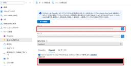
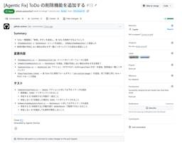
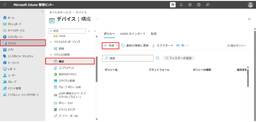

JBS Tech Blog
https://blog.jbs.co.jp/
JBS Tech Blogは、日本ビジネスシステムズ（JBS）の社員が分担して執筆を担当し、技術情報を発信しているブログです！Microsoft製品や生成AI関係の最新情報をはじめ、様々な製品やサービスの情報を幅広く公開しています。2022年3月より運用を開始し、営業日はほぼ毎日記事を公開しています。
フィード

Visual Studio CodeのGithub CopilotでMicrosoft FoundryでデプロイされているAzure OpenAIモデルを利用する
JBS Tech Blog
2026年4月22日に、GitHub Copilot BusinessおよびGitHub Copilot Enterpriseで、Visual Studio Code(以下、VS Code)でのBring Your Own Language Model Key(以下、BYOK)が利用可能になりました*1。これにより、Azureを含む外部モデルをGitHub Copilotのチャットで利用できるようになりました。 本記事では、GitHub Copilot BusinessおよびGitHub Copilot EnterpriseでMicrosoft Foundry上にデプロイされているAzure …
9時間前

Claude Codeを活用してAgentic DevOps アプリケーション自動改善CI/CDシステムを作ってみた
JBS Tech Blog
GitHub Issueにバグ報告を書いてラベルを付けるだけで、Claude Codeが自動でコード修正・テスト追加・PR作成まで行う「Agentic DevOps」の仕組みをGitHub Actionsで構築しました。
10時間前

【Microsoft×生成AI連載】【Microsoft Fabric】CoworkのFabric IQ プラグインのできることを説明してみた
JBS Tech Blog
Cowork（Copilot）に、Microsoft Fabric / Power BI のデータへチャットから直接つないで分析できる Fabric IQ プラグイン が用意されています。 従来、Power BI のデータを確認するにはレポートを開いてビジュアルやフィルターを操作し、必要に応じて DAX を自分で書く必要がありました。Cowork の Fabric IQ プラグインを使えば、チャットで質問するだけで、対象のセマンティックモデル / レポートの実データを根拠とした回答やチャートが得られるようになります。 本記事では、Cowork 上で利用できる Fabric IQ プラグインにつ…
16時間前

Snowflakeの直接共有でデータベースロールを使ったマスキング制御を試してみた
JBS Tech Blog
Snowflakeの直接共有におけるデータベースロールとマスキングポリシーを利用したアクセス制御方法を紹介します。 データベースロールを使うことで、共有データに対する権限をロール単位で管理できます。さらにマスキングポリシーと組み合わせることで、共有先アカウントで「元データを表示するロール」と「マスクした値を表示するロール」を制御できます。 なお、本記事ではマスキングポリシー自体の概要説明は省略し、直接共有とデータベースロールを組み合わせた実装手順に焦点を当てます。 本記事の内容は以下の通りです。 直接共有の概要 データベースロールを使用したマスキング制御の考え方 本記事の前提 使用するテーブル…
1日前

New Relic と Azure DevOps で実現する変更の可視化
JBS Tech Blog
New RelicのChange Tracking機能を活用し、Azure DevOpsでシステム変更を一元管理。コードと非コード変更を可視化し、メトリクスとの相関を確認できます。
2日前
PowerPointに組織のテンプレートを追加する方法 1
1
JBS Tech Blog
Microsoft PowerPoint（以下、PowerPoint）のテンプレートを組織が提供しているケースがありますが、ユーザーごとにインストールするのは手間がかかります。 その課題を組織のアセットライブラリという機能を使うことで解決することが出来ます。 本記事ではWindows PowerShell（以下、PowerShell）で組織のアセットライブラリを作成し、PowerPointに組織のテンプレートを追加する方法を紹介します。 事前準備 SharePointサイトを準備する ドキュメントライブラリを準備する テンプレートをアップロードする 組織のアセットライブラリを指定する Shar…
2日前

Exchange Onlineにおけるキャッシュモード無効化手順 1
JBS Tech Blog
Microsoft 365のOutlookでは、以下の通り既定でローカルキャッシュを利用する仕組みが有効化されています。 Outlook Classic：Exchange キャッシュ モード 新しいOutlook：オフラインアクセス機能 これらの機能により、メールボックスデータがローカル端末に保存され、オフライン利用やパフォーマンス向上が可能となります。 一方で、以下のような要件がある場合は、ローカルキャッシュの利用自体を制限したいケースがあります。 セキュリティ要件でローカルへのキャッシュの保存を避けたい 共有メールボックス利用時の同期不整合を回避したい 常に最新データを参照させたい OST…
2日前
【Microsoft×生成AI連載】【Excel】Copilot in Excelのプランモードを使ってみた 1
JBS Tech Blog
Excelで複雑なデータ整理やレポート作成をAIに任せたいとき、「気づいたら勝手にシートが編集されていた」「どんな手順で処理されたのか分からない」といった不安を感じたことはないでしょうか。Copilot in Excelにはこのような課題を解決する新機能としてプランモードが提供されています。ブックを編集する前にCopilotが「どのような手順で作業を進めるか」という計画を先に提示してくれるため、内容を確認・調整してから安心して実行できる仕組みです。本記事ではPlanモードの概要とできること、基本的な利用方法について紹介します。
2日前

Tanium とは 何か 1
JBS Tech Blog
近年、企業のIT環境は急速に複雑化しています。テレワークの普及やクラウド活用の拡大により、どのような状態なのかを正確に把握することが難しくなっています。 こうした課題を解決するソリューションとして注目されているのが Tanium（タニウム 以下、Tanium）です。 JBSは 2021年にタニウム合同会社のリセラー＆プロフェッショナルパートナーとなりました。Taniumライセンスの販売とTanium導入の支援や運用サービスを提供しています。 本記事では、Taniumの概要や特徴、そして導入が進んでいる背景について、わかりやすく解説します。 Taniumとは Taniumで何ができるのか 資産管…
3日前
【Microsoft Purview】秘密度ラベルでユーザー単位のアクセス制御を実現する 1
JBS Tech Blog
以前の記事では、Microsoft Purview(以下 Purview)の秘密度ラベルの基本的な設定方法をご紹介しました。 blog.jbs.co.jp 今回はその続きとして、秘密度ラベル作成時に設定可能な「ユーザー自身によるアクセス許可設定」ができるカスタムラベルをご紹介します。 (以下、本記事では、ユーザー自身でアクセス許可設定ができるラベルのことを「カスタムラベル」とします。) カスタムラベルとは カスタムラベルの設定方法 Officeファイルに対して、カスタムラベルを設定する Outlookでカスタムラベルを設定する場合の注意点 アクセス権限の設定方法 Office ファイルからのア…
3日前
【WinSyslog使ってみた】第3回 「InterActive Syslog Viewer」機能紹介 1
JBS Tech Blog
本記事では全3回に渡ってSyslogソフトの「WinSyslog」について紹介します。 第3回は、「InterActive Syslog Viewer」の機能を紹介していきます。 blog.jbs.co.jp 概要 InterActive Syslog Viewerの起動 InterActive Syslog Viewerの停止 Appendix : ログの各種操作手順 ログ削除手順 ログコピー手順 ログエクスポート手順 まとめ 概要 「InterActive Syslog Viewer」は、コンソールにてログをリアルタイムで閲覧できるWinSyslogの機能で、障害発生時や不正アクセス検知時…
4日前
IntuneでiOSサードパーティ製ストアアプリのインストールをブロックする設定 1
JBS Tech Blog
iOS 26.2より、App Store以外のストアアプリ（サードパーティ製ストアアプリ）をWebからインストールして、そこから任意のアプリをインストールすることが可能となりました。 ですが、組織の要件上、サードパーティ製ストアを利用させたくないケースもあります。 本記事では、Microsoft Intune（以降、Intune）にてiOSサードパーティ製ストアアプリのインストールをブロックする設定について記載します。 設定箇所 終わりに 設定箇所 iOS/iPadOS用の設定カタログで「制約」>「Marketplaceアプリのインストールを許可する」を追加し、「False」に設定します。 F…
7日前
Windows Server 2025：Hyper-V レプリケーションの設定と試験（試験編） 1
JBS Tech Blog
Windows Server 2025でも引き続き提供される Hyper-V レプリカは、安価かつ強力な DR ソリューションですが、その運用には「計画フェールオーバー」「（緊急時の）フェールオーバー」「テストフェールオーバー」の3つの違いを正しく理解しておく必要があります。 本記事では、これら3つのパターンの設定方法と、フェールバックを含めた試験手順をステップバイステップで解説します。 ※ Hyper-Vの設定編は以下の記事を参照ください。 blog.jbs.co.jp Hyper-V レプリカのフェールオーバー 計画フェールオーバー 切り替え操作（計画的） 切り戻し操作（計画的） フェール…
8日前
【Microsoft×生成AI連載】Agent Builderで作成したエージェントをCopilot Studioにコピーする 2
JBS Tech Blog
Agent Builderで作成したエージェントを、より高度な管理が可能なCopilot Studioにコピーする方法をご紹介。設定の引き継ぎや実践手順を詳しく解説し、エンタープライズ向けエージェントの開発をサポートします。
8日前

Microsoft 365の不要なグループを一括でアクティブから削除済に移動するスクリプト
JBS Tech Blog
Microsoft 365の不要なグループを一括で削除済のグループに移動するスクリプトを紹介します。 元々はテナント移行を実施する中で、移行先で使用しないチームをまとめて削除するために作成したスクリプトですが、運用でも活用可能と判断し、展開を検討しました。 本記事では、詳細なスクリプトや準備から実行までの一連の流れを紹介します。 また、準備にあたりグループのID（以下、GroupID）を控える必要があります。 以下の記事で一覧取得するスクリプトも紹介しておりますので、併せてご覧ください。 blog.jbs.co.jp インプット用ファイルの作成 スクリプトの作成から実行まで スクリプトの作成 …
8日前
Microsoft Agent Framework で Skill を持つ Agent を作成し、Microsoft Foundry Hosted Agent として公開して MAF から再利用する
JBS Tech Blog
Microsoft Agent Framework と Microsoft Foundry Agent Service を組み合わせることで、コードで実装した AI Agent を Microsoft 管理基盤上に公開し、他のアプリケーションや別の Agent から再利用できるようになります。本記事では、Microsoft Agent Framework（MAF）で Skill を持つ Agent を作成し、その Agent を Microsoft Foundry Hosted Agent として公開し、公開済みの Hosted Agent を再び MAF から呼び出す流れを紹介します。ポイン…
9日前
【Copilot Studio】e-Gov法令APIを利用して法令条文検索エージェントを作成する手順
JBS Tech Blog
Copilot Studioでは、エージェントから外部の公開APIを呼び出すことができます。これにより、社内ナレッジソースだけでは対応できないリアルタイムな情報をエージェントの回答に組み込むことが可能になります。 本記事では、デジタル庁が提供するe-Gov法令API v2をCopilot Studioに連携し、条文検索の質問に回答するエージェントの構築手順を、OpenAPI仕様書の作成からエージェントへのツール追加まで含めて解説します。 概要 使用するAPI 実装手順 OpenAPI仕様書の準備 REST APIツールの作成 エージェントへのツール追加 入力パラメータの追加 動作確認 まとめ …
10日前
【Microsoft×生成AI連載】Copilot Studioの会話型テストセットを使ってみた
JBS Tech Blog
【Microsoft×生成AI連載】シリーズの記事です。 Copilot Studioで作成したエージェントは、公開前や改善時に十分な評価・テストを行うことが重要です。 評価作業を効率化できる機能として、Copilot Studioの評価タブでは「会話型テストセット」が利用できるようになりました。 会話型テストセットを利用すると、実際のユーザーとのやり取りを想定した複数ターンの会話をまとめてテストできるため、エージェントの回答品質や会話の流れを効率的に検証できます。 本記事では、会話型のテストセットについて紹介します。 これまでの連載 会話型テストセットの紹介 テストセットとは 会話型のテスト…
10日前
Microsoft Foundry における OpenAI モデル と Claude モデル のデータの扱い - Azure を活用したコーディングエージェント基盤 連載第2回
JBS Tech Blog
Microsoft Foundry で、OpenAIモデルとClaudeモデルを利用する際のデータの扱いの違いを解説。生成AI基盤の利用を判断するうえで必須の知識です。
10日前
GPOの管理用テンプレートとは？ADMX / ADMLの役割とポリシー例を整理する
JBS Tech Blog
Active Directory 環境でWindows端末を管理する際に利用される仕組みの一つに、グループポリシー（GPO）があります。 GPOを編集していると、以下のような項目を目にすることがあります。 コンピューターの構成 └ 管理用テンプレート ユーザーの構成 └ 管理用テンプレート この「管理用テンプレート」は、GPOで設定できる項目を表示・定義するための重要な仕組みです。 本記事では、GPOをあまり触ったことがない方向けに、以下の内容を整理します。 GPOとは何か 管理用テンプレートとは何か ADMX / ADMLとは何か 管理用テンプレートはどこにあるのか 管理用テンプレートのダウ…
10日前
【Copilot Studio】「行の取得」アクションを使用してExcelから情報を抽出する方法
JBS Tech Blog
Copilot Studioのトピックやエージェントフローで利用できるアクションとして、「行の取得」アクションがあります。 「行の取得」アクションを使用することで、特定のExcelファイルにあるテーブルの行の値を取得できます。 今回はエージェントフローの「行の取得」アクションを使用して、Excelから情報を抽出します。抽出するExcelには商品名、金額、担当部署を記載しており、ユーザーが入力した担当部署名から紐づく商品名と金額を抽出できるかを確認します。 本記事はCopilot Studioの基本的な構築が完了しており、これから応用的な設定や活用方法を学びたい方を想定読者としています。 前提条…
11日前
アダプティブ カード デザイナーの使い方：その6 パーツの紹介（ColumnSet）
JBS Tech Blog
シンプルにわかりやすく解説！アダプティブカードデザイナーでのColumnSet活用法を紹介し、デザインの幅を広げるヒントを満載。
11日前
【ThinkSystem SR650 V3】XCCにおいてメールが受信できない事象について
JBS Tech Blog
XClarity Controller (以下XCC)とは、Lenovoが提供するサーバー管理ソフトウェアです。 物理サーバーのリモート起動、停止に加えて状態監視やイベント通知を行う機能を提供します。 このようなリモート管理機能はLenovo製品に限らず、HPEのiLOやDELLのiDRACなど、多くのサーバーベンダーで提供されており、運用上で非常に重要な役割を担っています。 本記事では、XCCにおいてハードウェア障害通知をメールで送信できる機能「SMTP設定」において、通知メールが送信されない事象に遭遇したためご紹介します。 ※本記事の内容は執筆時点での結果をもとに記載しているため、環境や製…
15日前
【Microsoft×生成AI連載】【Copilot in PowerPoint】WebページからPowerPointの資料を作成してみた
JBS Tech Blog
【Microsoft×生成AI連載】シリーズです！ Microsoft 365 Copilotでは、PowerPointでの資料作成を支援するさまざまな機能が提供されています。 2026年4月からは、CopilotがWebページを参照しながらスライドを生成する機能も追加されました。 これまではWebページのリンクを指定してもリンク先の内容を参照したスライドを作成できませんでしたが、この機能によりWeb上の情報を活用したスライド作成が可能になりました。 今回は、Microsoft 365 Copilot in PowerPoint（以下、Copilot in PowerPoint）を使い、Web…
15日前
Microsoft 365 ライセンスを切り替える方法【事前検討・設計編】
JBS Tech Blog
Microsoft 365 ライセンス切り替えにおける検討・設計フェーズで実施したことやポイントについて解説します。
16日前
【Microsoft×生成AI連載】PowerPoint上のCopilotでブランドキットを使って資料を作成してみた
JBS Tech Blog
本記事では、PowerPoint上のCopilotでブランドキットを利用して資料を作成する方法を紹介します。これまでブランドキットは、Microsoft 365 Copilotアプリの「作成」から利用できました。今回の変更でPowerPoint上のCopilotでもブランドキットを参照しながら資料を作成できるようになったため、普段の資料作成の流れの中でブランドに沿ったスライドを作成しやすくなりました。今回は、ブランドキットの登録方法と、実際に資料を作成する流れを紹介します。
17日前
VMware vSphere Hypervisor (無償版 ESXi) が再開されたので試してみた(インストール編)
JBS Tech Blog
本記事では、2025年5月に再度無償化されたVMware vSphere Hypervisor (以下、無償版ESXi) のインストール方法について簡単に紹介します。 こちらは無償版ESXiのISOファイルがダウンロード実施されていることが前提となります。過去の記事とあわせてご覧ください。1.VMware vSphere Hypervisor (無償版 ESXi) が再開されたので試してみた(ダウンロード編)2.VMware vSphere Hypervisor (無償版 ESXi) が再開されたので試してみた(インストール編)（本記事） ESXiインストール用USBメモリ作成 無償版ESXi…
18日前
Windows Server 2025：Hyper-Vレプリケーションの設定と試験（設定編）
JBS Tech Blog
Windows Server 2025の Hyper-V レプリケーションは、特別な共有ストレージを必要とせず、標準機能だけで仮想マシンを別拠点のサーバーへ同期できる、非常にコストパフォーマンスに優れた DR 手法です。 本記事では、レプリケーションの有効化から、初期同期の完了までの具体的な設定フローを網羅します。 対象読者 本環境の構成について Hyper-V レプリカの設定（ホスト） レプリケーションの設定（レプリケーション元） レプリケーションの設定（レプリケーション先） Hyper-V レプリカの設定（仮想マシン） レプリケーションの設定 フェールオーバーの TCP/IP の設定 レプ…
18日前
Power Appsで入力したFormデータをPower Automate経由でSharePoint Onlineに登録する方法
JBS Tech Blog
Power AppsからデータをSharePointリストに登録するにはいくつか方法があります。 今回はSharePointリストをデータソースとして、Power Appsのフォームに入力したデータをPower Automateを経由してSharePointリストにデータを格納する方法について記載します。 ※ 本記事はPower Apps中級者、Power Automate初級者向けに書いており、Power AppsのUIや各プロパティの設定については割愛します。 シナリオ SharePointリスト作成 Power Automateフロー作成 フローを作成する トリガーの設定 アクションの追…
19日前